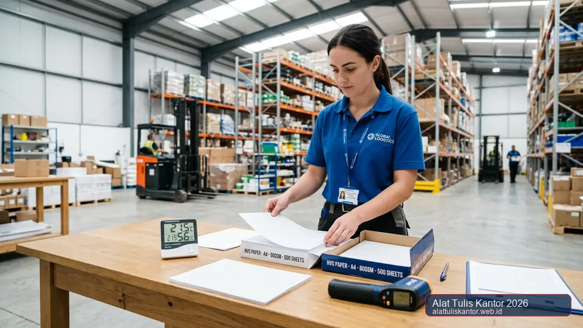

Kertas HVS yang bergelombang dan bahkan berjamur akibat salah penyimpanan adalah masalah yang lebih serius dibanding sekadar mengganggu kelancaran cetak. Jamur pada kertas tidak hanya merusak tampilan dan membuat kertas berbau tidak sedap, tetapi juga berpotensi menyebar ke tumpukan kertas lain di sekitarnya jika tidak segera ditangani, bahkan berisiko menimbulkan masalah kesehatan pernapasan bagi staf yang menangani kertas tersebut dalam jangka panjang.
Artikel ini membahas cara mengatasi kertas HVS yang sudah terlanjur bergelombang dan berjamur, sekaligus langkah pencegahan agar masalah ini tidak terulang di kemudian hari. Menerapkan metode penyimpanan kertas yang benar serta memilih pasokan dari distributor ATK resmi B2B dengan kemasan berkualitas akan melindungi stok kertas Anda dalam jangka panjang. Konsultasi kebutuhan pengadaan dapat dilakukan via WhatsApp di 0889-8964-3555.
Peringatan Kesehatan: Spora jamur kertas (paper mold) yang terhirup secara terus-menerus dapat memicu alergi dan gangguan saluran pernapasan bagi staf gudang atau administrasi kantor.
Ringkasan Mengatasi Kertas HVS Bergelombang dan Berjamur
Kertas HVS yang sudah berjamur sebaiknya tidak digunakan lagi dan segera dipisahkan dari stok kertas lain untuk mencegah penyebaran spora jamur. Untuk kertas yang baru bergelombang ringan tanpa jamur, dapat diperbaiki sementara dengan menekannya di antara buku tebal selama beberapa hari di ruangan kering.
Pencegahan jangka panjang membutuhkan perbaikan sistem penyimpanan: gunakan rak tertutup dengan sirkulasi udara baik, jaga kelembapan ruangan pada 45-55 persen, dan lakukan rotasi stok agar tidak ada kertas yang tersimpan terlalu lama tanpa terpakai.
Mengapa Kertas Bisa Berjamur, Bukan Hanya Bergelombang
Kertas bergelombang biasanya disebabkan oleh penyerapan kelembapan udara dalam kadar sedang, namun jika kondisi lembap ini berlangsung terus-menerus dalam waktu lama tanpa sirkulasi udara yang memadai, kondisi tersebut menjadi lingkungan ideal bagi pertumbuhan jamur dan kapang, yang memakan selulosa pada serat kertas sebagai sumber nutrisinya.
Ruangan gudang yang tertutup rapat tanpa ventilasi, terutama di musim hujan atau ruangan berlantai semen dingin tanpa palet penyangga, menjadi lokasi paling rawan untuk perkembangbiakan spora jamur perusak kertas.
Cara Menangani Kertas yang Sudah Berjamur
1. Pisahkan Segera dari Stok Kertas Lain
Begitu ditemukan tanda-tanda jamur (bercak hitam, hijau, kecokelatan, atau aroma apek yang menusuk), segera pisahkan tumpukan kertas tersebut dari stok lain untuk mencegah spora jamur menyebar ke kertas yang masih bersih di sekitarnya.
2. Jangan Digunakan untuk Dokumen Penting
Kertas yang sudah terkontaminasi jamur sebaiknya tidak digunakan untuk mencetak dokumen apa pun, karena selain berisiko kesehatan, kualitas cetakan pada kertas berjamur juga cenderung buruk, tinta mudah luntur, dan terlihat sangat tidak profesional. Untuk dokumen arsip jangka panjang, gunakan spesifikasi kertas HVS berkualitas tahan luntur yang disimpan di lingkungan terkontrol.
3. Bersihkan Area Penyimpanan Secara Menyeluruh
Setelah kertas berjamur disingkirkan, bersihkan rak dan area penyimpanan dengan cairan disinfektan anti-jamur yang aman, serta pastikan area tersebut benar-benar kering dan terpapar sirkulasi udara segar sebelum kertas baru disimpan kembali di lokasi yang sama.
Cara Memperbaiki Kertas yang Baru Bergelombang Ringan
- Pisahkan lembar kertas yang bergelombang dari tumpukan yang masih rata.
- Letakkan kertas di antara dua buku tebal atau papan rata bermassa berat sebagai pemberat merata.
- Simpan di ruangan kering dengan sirkulasi udara baik serta kelembapan stabil selama 2-3 hari.
- Periksa kembali kerataan kertas sebelum digunakan; jika masih bergelombang signifikan, sebaiknya tidak dipaksakan untuk printer laser guna mencegah masalah paper jam pada printer kantor atau kerusakan roller pemanas mesin fotokopi.

Tabel Tanda Kerusakan Kertas dan Tindakan yang Disarankan
| Kondisi Kertas | Penyebab Umum | Tindakan yang Disarankan |
|---|---|---|
| Bergelombang ringan, tanpa noda | Kelembapan sedang, sirkulasi kurang | Perbaiki dengan pemberat, masih bisa dipakai |
| Bercak hitam/hijau, berbau apek | Jamur akibat kelembapan tinggi jangka panjang | Buang, jangan digunakan lagi |
| Menguning tanpa gelombang/jamur | Paparan cahaya langsung/usia kertas lama | Masih bisa dipakai untuk dokumen non-formal |
Langkah Pencegahan Jangka Panjang
- Gunakan rak tertutup berventilasi: Gunakan rak besi berventilasi atau lemari penyimpanan yang memiliki sirkulasi udara baik, bukan menaruh kardus kertas langsung menempel di lantai semen.
- Kontrol kelembapan gudang (RH 45-55%): Jaga kelembapan ruangan penyimpanan pada rentang 45-55 persen menggunakan dehumidifier ruangan atau silica gel industri dalam jumlah memadai.
- Terapkan rotasi stok FIFO (First-In-First-Out): Terapkan manajemen stok dengan panduan checklist reorder point dan rotasi ATK agar kardus kertas yang datang lebih awal digunakan terlebih dahulu.
- Pemeriksaan berkala di musim hujan: Terapkan prosedur standar sesuai SOP pengadaan dan inventaris General Affair untuk memantau kondisi fisik gudang secara berkala.
Studi Kasus: Penyelamatan Gudang ATK Yayasan Pendidikan Nusantara Jaya
Yayasan Pendidikan Nusantara Jaya menemukan sebagian besar stok kertas HVS mereka berjamur setelah disimpan selama musim hujan di gudang tanpa ventilasi yang memadai, mengakibatkan kerugian signifikan karena harus membuang beberapa rim kertas yang sudah tidak layak pakai.
Setelah merenovasi sistem penyimpanan dengan menambahkan rak berventilasi dan dehumidifier ruangan, serta menerapkan strategi pengendalian anggaran ATK sekolah yang lebih ketat, yayasan tersebut tidak lagi mengalami kejadian serupa pada musim hujan berikutnya dan berhasil menekan pemborosan kertas hingga 100%.
Hasil Solutif: Implementasi rak besi berventilasi dan dehumidifier mandiri berhasil menyelamatkan ribuan lembar kertas stok ujian semester di Yayasan Pendidikan Nusantara Jaya.
Panduan Memilih Kertas HVS Grosir dengan Kemasan Tahan Lama
Untuk memastikan efisiensi pembelian kertas kantor dalam skala besar, Anda dapat mempelajari perbandingan ukuran kertas HVS seperti F4, A4, dan Q4 sesuai kebutuhan administrasi masing-masing divisi. Selain itu, pelajari juga strategi mendapatkan diskon bulk terbesar dari distributor ATK agar perusahaan Anda memperoleh harga terbaik dengan jaminan kemasan moisture-barrier yang aman dari risiko lembap saat disimpan di gudang.
Pertanyaan yang Sering Diajukan (FAQ)
Kesimpulan
Kertas HVS yang bergelombang dan berjamur bukan sekadar masalah estetika, melainkan indikasi sistem penyimpanan yang perlu diperbaiki segera. Dengan penanganan yang tepat untuk kertas yang sudah rusak dan langkah pencegahan jangka panjang melalui perbaikan sistem gudang, sekolah maupun kantor dapat menghindari kerugian stok kertas yang signifikan di kemudian hari.